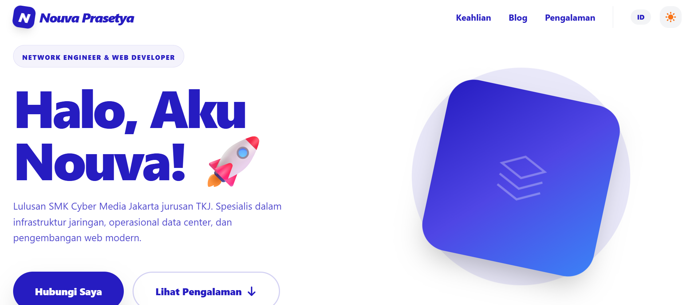
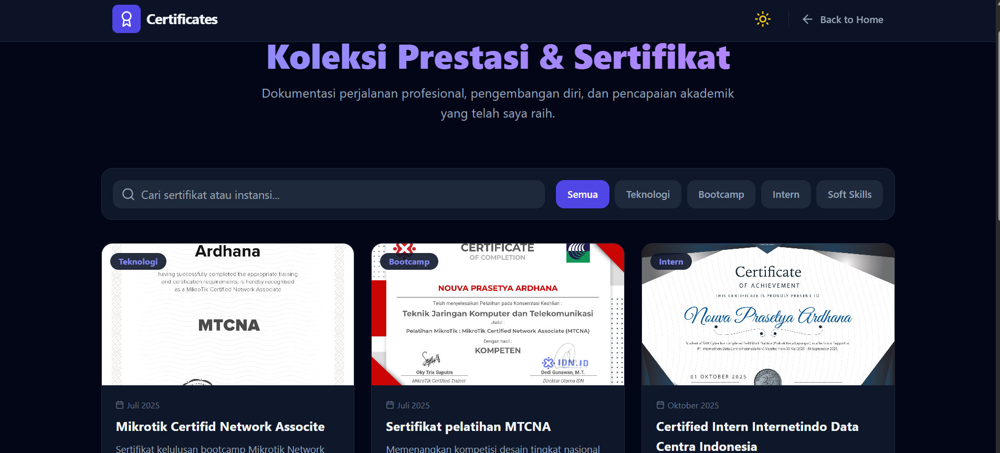
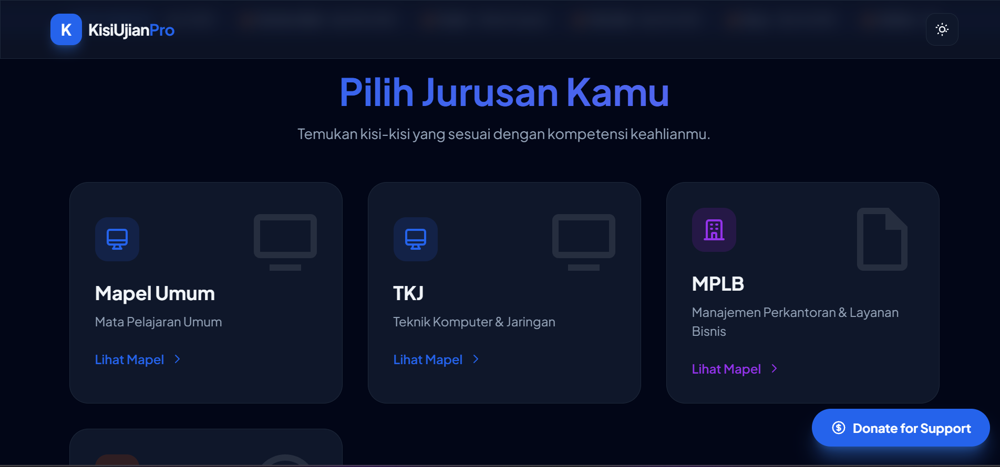

Proyek Terbaru
Beberapa karya dan proyek yang telah saya selesaikan.

Website Task Manager
Website untuk mengatur tugas-tugas telah dimasukkan oleh client tersebut dengan ambient dan gallery yang dibuat oleh saya sendiri.

Website Portofolio V1
Project Website Portofolio Versi 1 yang dibuat dengan Gemini Pro dan di edit sendiri oleh saya atau Nouva Prasetya Ardhana


Website Kisi-Kisi Ujian Sekolah
Project Website Kisi-Kisi Ujian Sekolah yang bertujuan untuk membantu para siswa belajar secara daring untuk Ujian Sekolah,Website tersebut berisikan kisi-kisi dan latihan soal sebanyak 45 Pilihan Ganda dibuat dengan gemini quiz. website ini dibuat sendiri oleh saya atau Nouva Prasetya Ardhana